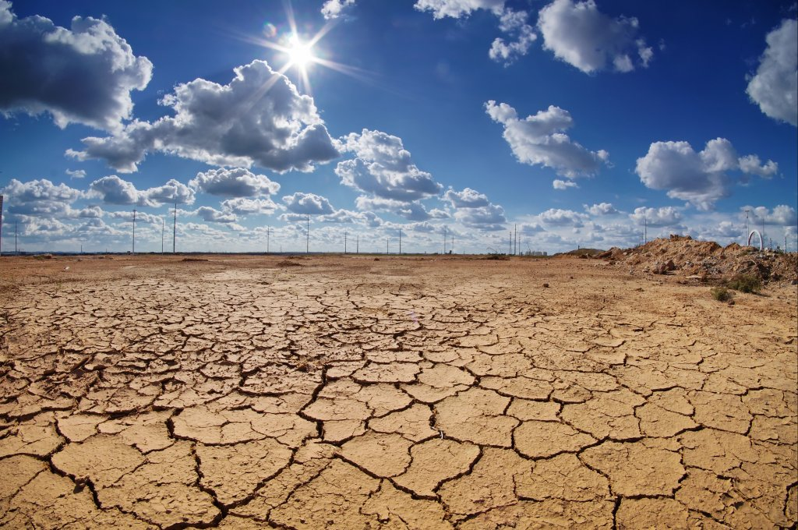
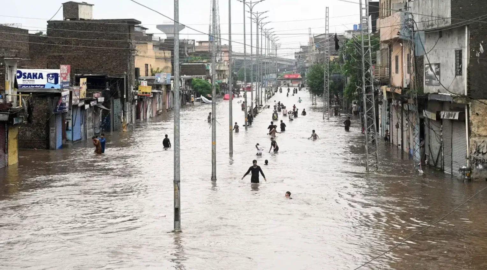
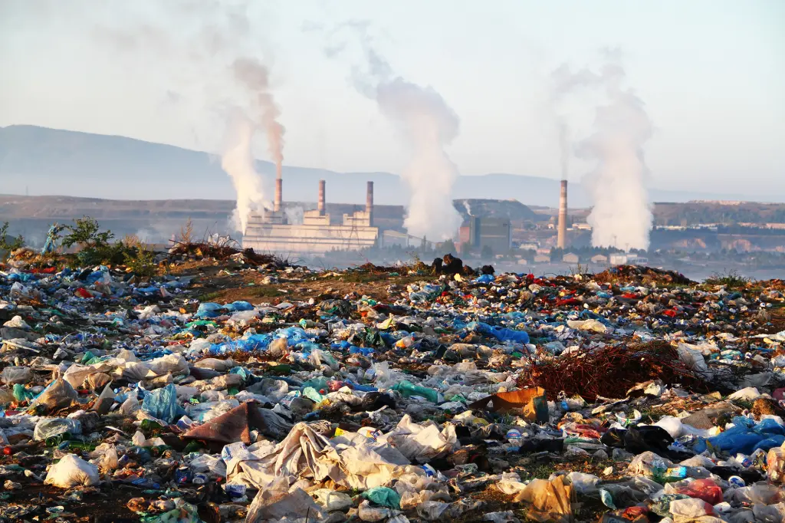
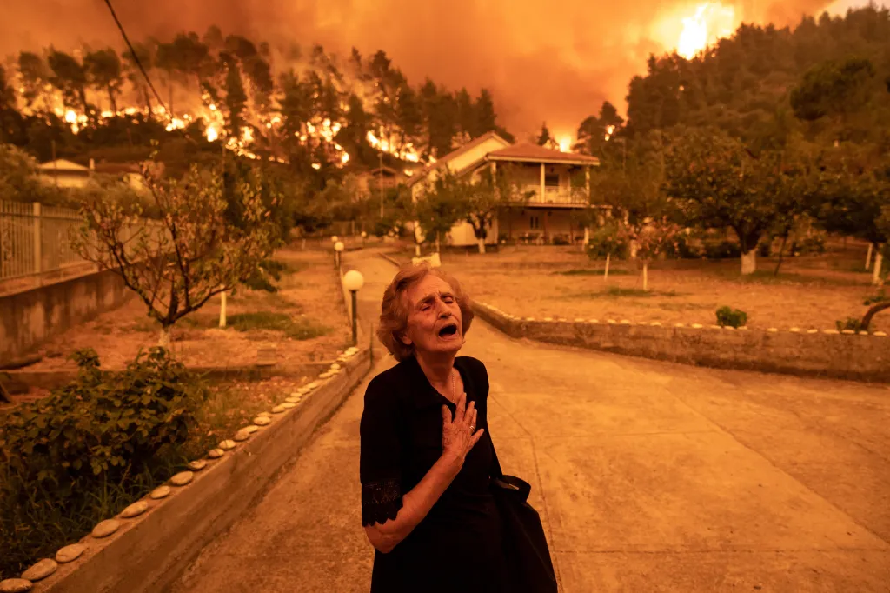

Scroll Story
This page moves from abstract climate data, to the public space of Union Square, to the lived consequences that numbers alone cannot fully express.
Stage 1
At first, climate crisis appears as numbers: countdowns, carbon budgets, thresholds, projections, and years remaining. These forms feel precise, scientific, and authoritative. They help make climate change measurable. But they can also feel distant from everyday life. People find it difficult to grasp the message that raw numbers are intended to convey, and they may lack the desire to explore them further.
Stage 2
Numbers do not appear in empty space. The Climate Clock exists in Union Square, surrounded by people walking, traffic moving, subway entrances, advertisements, and the speed of everyday urban life. In this setting, the clock becomes a public media object. It is visible, but visibility does not guarantee attention. It is dramatic, but drama does not guarantee comprehension.
Here, the countdown competes with distraction. Its meaning depends not only on science, but also on context: where it is placed, who notices it, and how people interpret it while moving through the city.
Stage 3
Finally, the story moves beyond abstraction. A climate number may indicate danger, but it cannot fully show what that danger feels like. Heat is bodily. Flooding is local. Smoke is inhaled. Loss is unevenly lived. To understand climate crisis more deeply, data must be connected to lived experience, emotion, and human vulnerability. When disasters caused by actual climate change confront people directly, they are most capable of empathy—and most acutely aware of the reality of the disaster.

Extreme heat is not just a statistic. It is exhaustion, illness, and unequal exposure.

Flooding turns crisis into damaged homes, displacement, and daily disruption.

Smoke makes climate visible in the air itself, through breathing, fear, and vulnerability.

Loss includes grief, instability, and the disappearance of places, safety, and routine.
Conclusion
This scroll story shows that data by itself is difficult to interpret in a full human sense. Numbers can communicate urgency, but they do not automatically produce deep understanding, emotional connection, or political response. A countdown can tell us that time is running out, but it cannot by itself explain who is at risk first, how crisis is felt in everyday life, or what meaningful action looks like. Climate communication becomes more powerful when data is connected to public space, lived experience, and emotional reality. Without that connection, the climate crisis can remain visible yet still feel abstract.